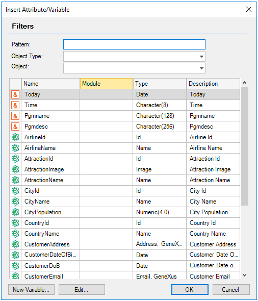
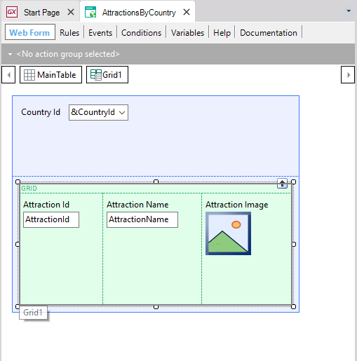
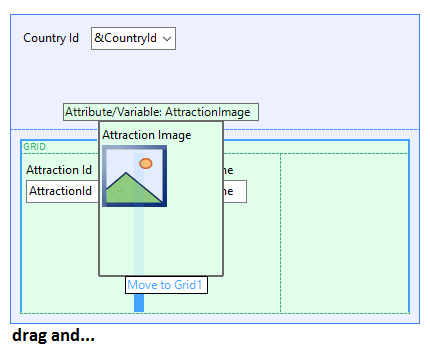
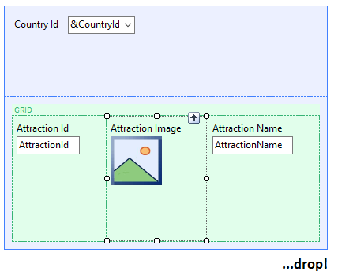
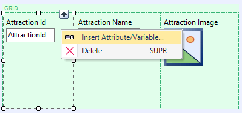
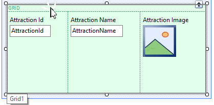
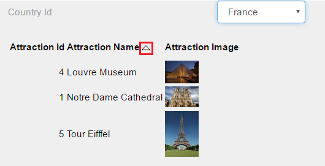
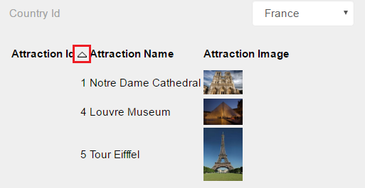

This control allows you to display data associated with many records; depending on the GeneXus object, it also allows you to add, change and/or delete data. It can be used in Transaction objects and Web Panel objects (also on Work Panel objects, Work With for Smart Devices object, Panel for Smart Devices object), and allows you to include both attributes and variables (including those of Bitmap data type/Image data type). When used in a transaction (grid with Base Table) it makes it possible to insert, change and/or delete records in the corresponding associated table. Also, if the Grid is used in a Web Panel (grid with/without Base Table, depending on whether it contains attributes and/or variables), it will display the data stored in tables. To add a grid to the selected location, drag it from the Grid toolbox icon onto the Web Form. This will open the Selector window.  You can select multiples lines by clicking on them while holding down the Shift or Ctrl keys. When the selection is finished, the selected attributes and/or variables will be inserted into the grid. In this case, one column will be added for each one of them.  Columns can be exchanged. To do so, select the column to move and an arrow will be displayed that indicates the possible new location. To position a column, drop it at the desired location.   You can add more columns by right-clicking one of the attributes and selecting Add Atribute/Variable.... This will open the Insert Attribute/Variable window. You can also drag & drop an attribute/variable from the toolbox in the grid.  If you select the entire grid, the copy/cut/paste/etc. options will be available in the Edit option of the IDE; normal shortcuts (Ctrl+C, Ctrl+V, etc.) also work. Tip:To quickly select a grid, position the mouse cursor on the upper part of the control, as shown in the figure below.  Runtime Features of grids
 
Notes
|
| Sub Categories |
| Category:Grid control |